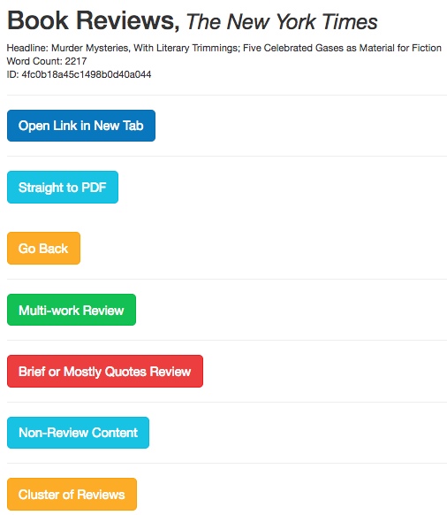
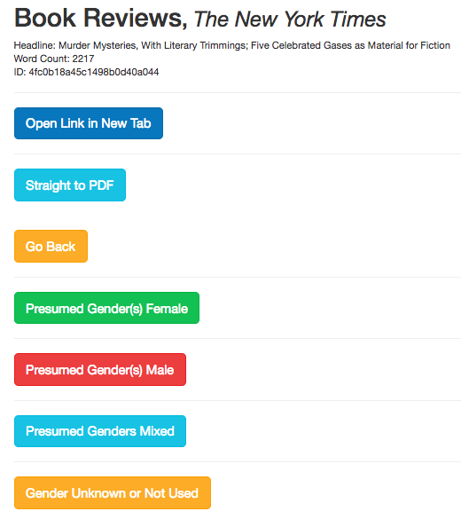
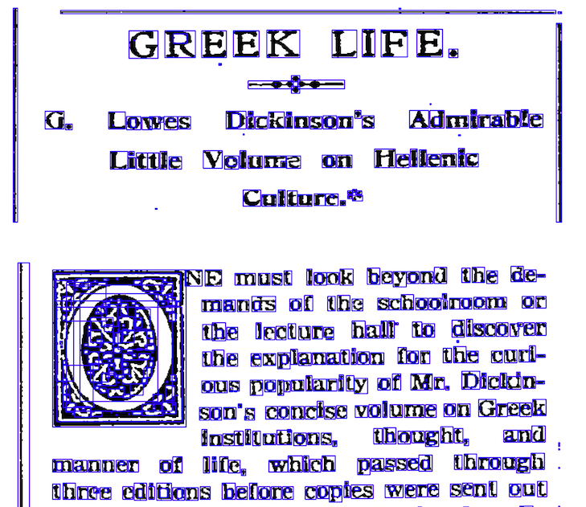
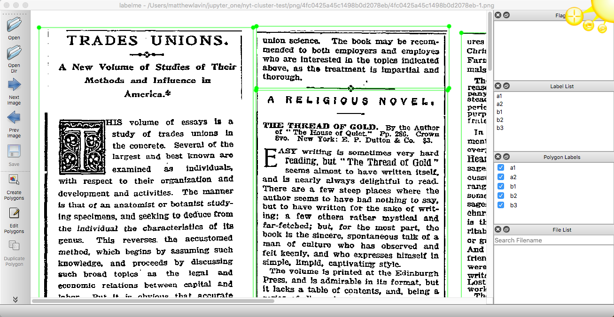

class: middle # Text-Mining Turn-the-20th-Century Book Reviews: ### Expanding and Scaling My _New York Times_ Pilot Project <hr> Matthew J. Lavin Clinical Assistant Professor of English and Director of Digital Media Lab University of Pittsburgh Fall 2018 --- class: middle # The Pilot Project <hr> - #### Can machine learning analyze terms frequencies in a book review and predict the presumed gender of the reviewed work's author? - #### If so, what do the terms informing predictions tell us about the gendering of review language? - #### Pilot study of _The New York Times_, 950 reviews from 1905, with an interest in "middlebrow" taste - #### Gave a talk for this lunch series (Spring 2018) - #### Revised talk for SHARP (July 2018) and submitted an article --- class: middle # Peer Review Feedback <hr> - #### Overall positive response - #### Asked for a 15-20 year date range, or more periodicals from 1905 - #### Working on expanded corpus, NYT reviews, 1905-1925 - #### Place the pilot study elsewhere? --- class: middle # Front 1: Requesting OCR and pdf files from _The New York Times_ <hr> - #### First made contact July 2018, various emails since then - #### They haven't said no, but it's been "we'll get back to you" for three months - #### Expecting to receive a formal response in about two weeks - #### Will at minimum have to pay a licensing fee --- class: middle # Front 2: Labeling content <hr> - #### Single work review, multi-work review, review cluster, non-review content <hr>  --- class: middle # Front 2: Labeling content <hr> - #### Presumed male, presumed female, multi, none <hr>  --- class: middle # Results <hr> - #### Started with more than 28,000 metadata objects from API ... no PDF files yet - #### Hand tagged and reduced the problem space by learning trends as I went - #### For example: - #### In headlines, _$#_ or _$##_ are good searches, often a review with book price, but _$###_, _$#,_ are more likely to be articles about auctions - #### Used R-gender package to look for male and female first names in headlines (and hand-corrected) - #### Pages BR1-BR10 are more likely to have single work reviews - #### I now I have about 800 single-work reviews and 500 review cluster PDFs in my date range --- class: middle # Front 3: De-clustering <hr> - #### OpenCV dilation and contours (unsupervised perimeter detection) - #### Need to get the settings right, or else ... <hr>  --- class: middle # Front 3: De-clustering <hr> - #### Hand correcting with LabelMe software - #### Hopefully, can do all 500 clusters and end with a sample of 1,500-2,000 reviews <hr>  --- class: middle # Front 3: De-clustering <hr> - #### Re-align with requested OCR data or OCR myself - #### Waiting to hear back from _NYT_ on OCR format